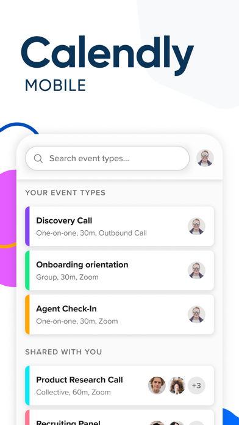

Strong happy path, weak recovery path
Calendly Mobile works for viewing and sharing. The friction starts when a host needs to repair state from the phone after a schedule change or sync issue.

1
Availability edits still spill to desktop
Hosts mention blocked-time overrides, reschedules, and stale
one-time links that are hard to repair from mobile.
2
Generic failure states cost trust
Recent store reviews mention login loops, slot conflicts,
and vague error handling.
3
Parity gaps force support escalation
iOS complaints include no meeting polls, no dark mode, and
limited host-side repair actions.